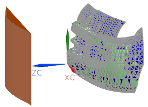
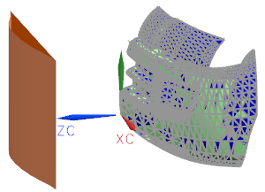

指定基本曲面
基本曲面和控制曲面已经为您创建好了，但是，如果要创建，必须定义基本曲面和控制曲面，以使输入片体的任何点都可以沿着法向投影到基本曲面并创建一个解决方案。
-
在基本曲面组中，当选择面
 激活时，选择图形窗口左侧的平坦矩形片体。
激活时，选择图形窗口左侧的平坦矩形片体。将显示临时的小平面体。

基本曲面和控制曲面已经为您创建好了，但是，如果要创建，必须定义基本曲面和控制曲面，以使输入片体的任何点都可以沿着法向投影到基本曲面并创建一个解决方案。
在基本曲面组中，当选择面  激活时，选择图形窗口左侧的平坦矩形片体。
激活时，选择图形窗口左侧的平坦矩形片体。
将显示临时的小平面体。
